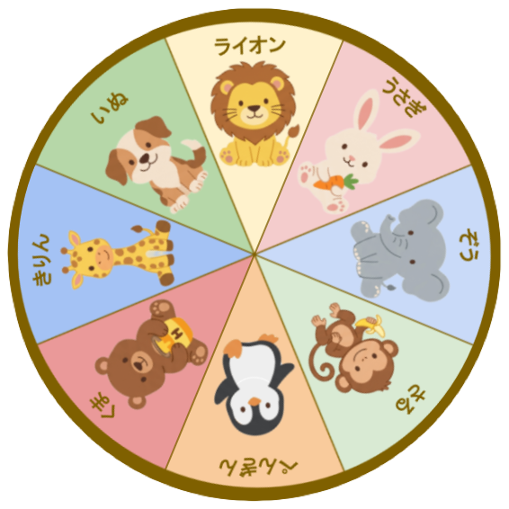

どうぶつルーレット.html
<!DOCTYPE html>
<html lang="ja">
<head>
  <meta charset="UTF-8">
  <meta name="viewport" content="width=device-width, initial-scale=1.0">
  <title>どうぶつルーレット</title>
  <style>
    /* 全体・背景設定 */
    body {
      margin: 0;
      padding: 0;
      background-image: url('bg.png');
      background-size: cover;
      background-position: center;
      background-color: #fff9e6; /* 背景画像読み込み失敗時のフォールバック */
      font-family: 'Hiragino Maru Gothic ProN', 'Rounded M+ 1c', 'Meiryo', sans-serif;
      display: flex;
      justify-content: center;
      align-items: center;
      height: 100vh;
      overflow: hidden;
      position: relative; /* 右下のお花ボタンの配置基準 */
    }

    /* アプリケーションのコンテナ */
    .app-container {
      display: flex;
      flex-direction: column;
      align-items: center;
      gap: 40px;
      width: 100%;
      max-width: 500px;
      padding: 20px;
      box-sizing: border-box;
    }

    /* ルーレットのラッパー（中央配置用） */
    .roulette-wrapper {
      position: relative;
      width: 85vw;
      max-width: 380px;
      aspect-ratio: 1 / 1;
      display: flex;
      justify-content: center;
      align-items: center;
    }

    /* ルーレット盤本体 */
    .roulette-board {
      width: 100%;
      height: 100%;
      object-fit: contain;
      /* 自然に減速するアニメーション（6秒に変更） */
      transition: transform 6s cubic-bezier(0.1, 0.8, 0.2, 1);
      transform-origin: center center;
      will-change: transform;
    }

    /* 画像読み込みエラー時の代替要素 */
    .roulette-fallback {
      border-radius: 50%;
      box-shadow: 0 4px 10px rgba(0,0,0,0.1);
      border: 8px solid #c8a165;
      box-sizing: border-box;
    }

    /* 中央のインジケーター（矢印と円） */
    .center-indicator {
      position: absolute;
      top: 50%;
      left: 50%;
      transform: translate(-50%, -50%);
      display: flex;
      flex-direction: column;
      align-items: center;
      z-index: 10;
      pointer-events: none;
    }

    /* 12時の方向を指す赤い矢印 */
    .arrow {
      width: 0;
      height: 0;
      border-left: 12px solid transparent;
      border-right: 12px solid transparent;
      border-bottom: 30px solid #ff4b4b; /* 上向きの三角形 */
      margin-bottom: -8px; /* 円に少し食い込ませる */
      z-index: 11;
      filter: drop-shadow(0px 2px 2px rgba(0,0,0,0.3));
    }

    /* 中央の円（元の画像デザイン風） */
    .center-circle {
      width: 60px;
      height: 60px;
      background-color: #ffffff;
      border: 6px solid #8e6c46;
      border-radius: 50%;
      box-sizing: border-box;
      box-shadow: 0 3px 6px rgba(0,0,0,0.2);
    }

    /* 隠しスタートボタン（右下のお花） */
    .secret-start-btn {
      position: absolute;
      bottom: 20px;
      right: 20px;
      background: none;
      border: none;
      font-size: 24px;
      cursor: pointer;
      z-index: 50;
      opacity: 0.8; /* 背景に紛れるように少し透過 */
      padding: 10px;
      margin: 0;
      outline: none;
    }
    
    .secret-start-btn:disabled {
      cursor: not-allowed;
      opacity: 0.3;
    }

    /* リトライボタンのスタイル（コントロールエリアのスタイルを一部引き継ぎ） */
    .retry-btn {
      background-color: #ff8c00;
      color: white;
      border: none;
      border-radius: 40px;
      padding: 15px 50px;
      font-size: 26px;
      font-weight: bold;
      cursor: pointer;
      box-shadow: 0 6px 0 #c26a00, 0 10px 10px rgba(0,0,0,0.2);
      transition: transform 0.1s, box-shadow 0.1s, background-color 0.2s;
      letter-spacing: 2px;
    }

    .retry-btn:active {
      transform: translateY(6px);
      box-shadow: 0 0px 0 #c26a00, 0 4px 4px rgba(0,0,0,0.2);
    }

    /* 結果表示のモーダル */
    .modal {
      position: fixed;
      top: 0; left: 0; width: 100vw; height: 100vh;
      background: rgba(0, 0, 0, 0.6);
      display: none;
      justify-content: center;
      align-items: center;
      z-index: 100;
    }

    /* JSでクラス付与して表示 */
    .modal.show {
      display: flex;
    }

    /* モーダルの中身 */
    .modal-content {
      background: #ffffff;
      padding: 40px 30px;
      border-radius: 24px;
      text-align: center;
      box-shadow: 0 15px 30px rgba(0,0,0,0.3);
      animation: popIn 0.4s cubic-bezier(0.175, 0.885, 0.32, 1.275);
      max-width: 90%;
      box-sizing: border-box;
      border: 4px solid #ff8c00;
    }

    @keyframes popIn {
      0% { transform: scale(0.5); opacity: 0; }
      100% { transform: scale(1); opacity: 1; }
    }

    /* 当たりテキスト */
    .result-text {
      font-size: 28px;
      font-weight: bold;
      color: #333;
      margin-top: 0;
      margin-bottom: 30px;
    }
  </style>
</head>
<body>

  <div class="app-container">
    <div class="roulette-wrapper">
      
      
      <div class="center-indicator">
        <div class="arrow"></div>
        <div class="center-circle"></div>
      </div>
    </div>
  </div>
  
  <button id="start-btn" class="secret-start-btn">🌸</button>

  <div id="modal" class="modal">
    <div class="modal-content">
      <p id="result-text" class="result-text">〇〇があたったよ！</p>
      <button id="retry-btn" class="retry-btn">もういちどあそぶ</button>
    </div>
  </div>

  <script>
    // ルーレットの動物リスト（時計回り順）
    // 0度の位置（真上）がライオンとして設定
    const animals = [
      "ライオン",
      "うさぎ",
      "ぞう",
      "さる",
      "ペンギン",
      "くま",
      "きりん",
      "いぬ"
    ];

    const startBtn = document.getElementById('start-btn');
    let rouletteBoard = document.getElementById('roulette-board');
    const modal = document.getElementById('modal');
    const resultText = document.getElementById('result-text');
    const retryBtn = document.getElementById('retry-btn');

    // 音声ファイルの読み込み
    const spinSound = new Audio('spin.mp3');
    spinSound.loop = true;
    const resultSound = new Audio('result.mp3');

    let currentDeg = 0;      // 現在の回転角度（累積）
    let isSpinning = false;  // 回転中かどうかのフラグ

    // スタートボタンのクリックイベント
    startBtn.addEventListener('click', () => {
      if (isSpinning) return;
      isSpinning = true;
      startBtn.disabled = true;

      // 回転音の再生
      spinSound.currentTime = 0;
      spinSound.play();

      // 1. 当たる動物をランダムに決定 (0 ~ 7)
      const targetIndex = Math.floor(Math.random() * animals.length);
      
      // 2. 1区切りの角度を計算 (360度 ÷ 8 = 45度)
      const segmentAngle = 360 / animals.length;
      
      // 3. 目的の動物を真上(12時の位置)に持ってくるための角度計算
      const targetRem = (360 - (targetIndex * segmentAngle)) % 360;

      // 現在の角度の余りを取得 (0 ~ 359)
      const currentRem = currentDeg % 360;

      // 目的の角度にするために追加で回すべき角度を計算
      let diff = targetRem - currentRem;
      if (diff < 0) {
        diff += 360;
      }

      // 4. 回転数の追加 (例: 5回転)
      const spinCount = 5;
      const totalRotation = (360 * spinCount) + diff;

      // 5. 累積角度に加算してスタイルを更新
      currentDeg += totalRotation;
      rouletteBoard.style.transform = `rotate(${currentDeg}deg)`;

      // 6. アニメーション完了(6秒)後にポップアップを表示
      setTimeout(() => {
        isSpinning = false;

        // 回転音を止めて、結果音を鳴らす
        spinSound.pause();
        resultSound.currentTime = 0;
        resultSound.play();

        resultText.textContent = `${animals[targetIndex]}があたったよ！`;
        modal.classList.add('show');
      }, 6000); // ここを6000に変更
    });

    // リトライボタンのクリックイベント
    retryBtn.addEventListener('click', () => {
      modal.classList.remove('show');
      startBtn.disabled = false;
    });

    // 画像読み込みエラー時のフォールバック処理
    window.handleImageError = function(img) {
      const fallback = document.createElement('div');
      fallback.className = 'roulette-board roulette-fallback';
      fallback.id = 'roulette-board';
      
      // 簡易的な8等分のグラデーションでルーレットを表現
      fallback.style.background = 'conic-gradient(#f8e58c 0deg 45deg, #f8c1cc 45deg 90deg, #a8d0db 90deg 135deg, #c4e09f 135deg 180deg, #d1c4e9 180deg 225deg, #b3e5fc 225deg 270deg, #ffccbc 270deg 315deg, #c8e6c9 315deg 360deg)';
      fallback.style.display = 'flex';
      fallback.style.justifyContent = 'center';
      fallback.style.alignItems = 'center';
      
      const text = document.createElement('span');
      text.innerHTML = '画像なし<br>モード';
      text.style.fontWeight = 'bold';
      text.style.color = '#333';
      text.style.textAlign = 'center';
      text.style.backgroundColor = 'rgba(255,255,255,0.7)';
      text.style.padding = '5px 10px';
      text.style.borderRadius = '10px';
      fallback.appendChild(text);

      // 元のimgタグと入れ替え
      img.parentNode.replaceChild(fallback, img);
      
      // JavaScriptの変数参照を更新
      rouletteBoard = fallback;
    };
  </script>
</body>
</html>